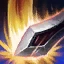
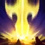

Justicia de Acero
Como miembro de la guardia real, Garen personifica los valores de Demacia. Su presencia en el campo de batalla asegura que la justicia prevalezca sobre la magia y el caos.
Usamos un diseño de alto contraste para resaltar su figura imponente contra la oscuridad del conflicto.

Habilidades

Golpe Decisivo
Libera a Garen de ralentizaciones y silencia al enemigo.
Tecla Q
Coraje
Reduce el daño recibido, otorgando seguridad defensiva.
Tecla W
Juicio
Un torbellino de acero que tritura las armaduras enemigas.
Tecla E
Justicia
Invoca el poder de Demacia para ejecutar al villano.
Tecla R